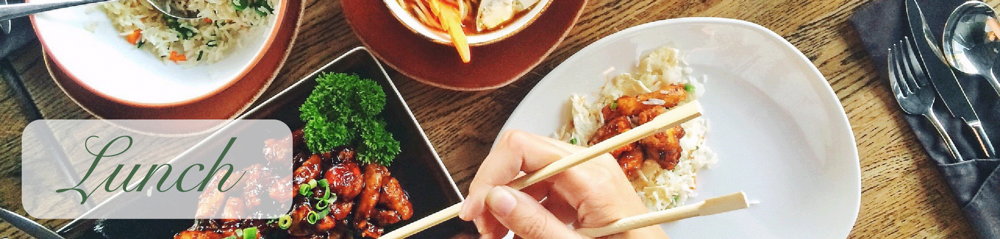

Ibland är det svårt att hinna med lunchen...
Dessa recept går både snabbt att laga och är riktigt goda! Klicka på rubrikerna för att komma till recepten.
Recept:
Arla: fisk, 15 min
Arla: fläsk, 15 min
Coop: vegetarisk, 15 min
Coop: vegetarisk, 20 min
Felix: Vegetarisk, 20 min